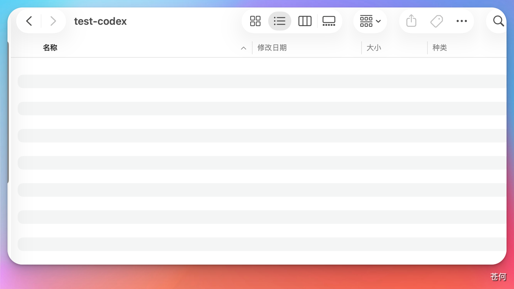
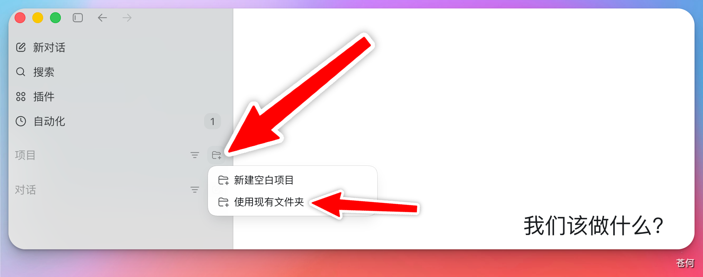
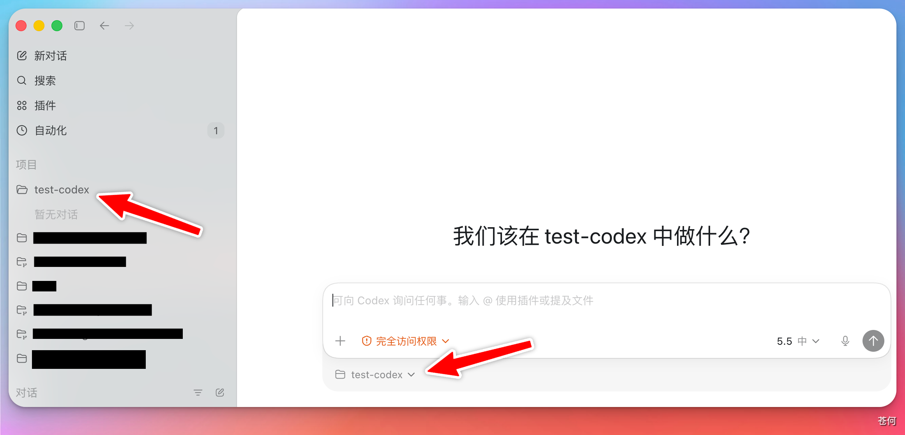
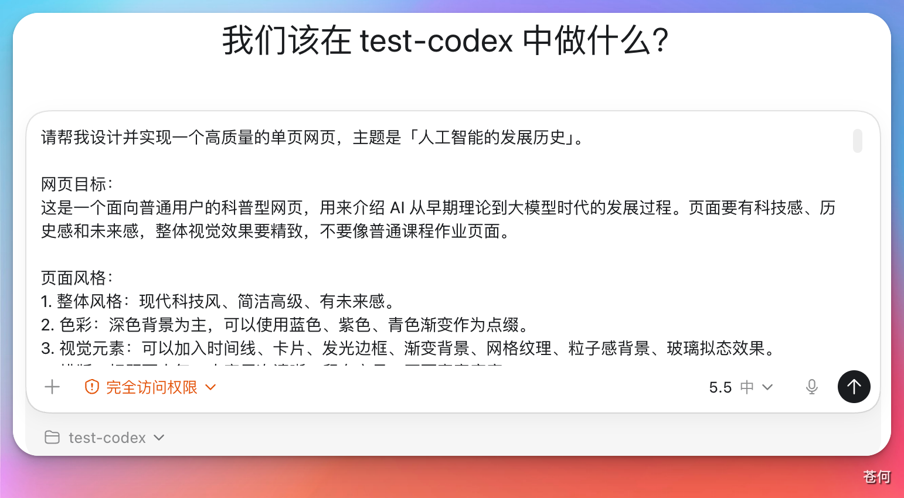
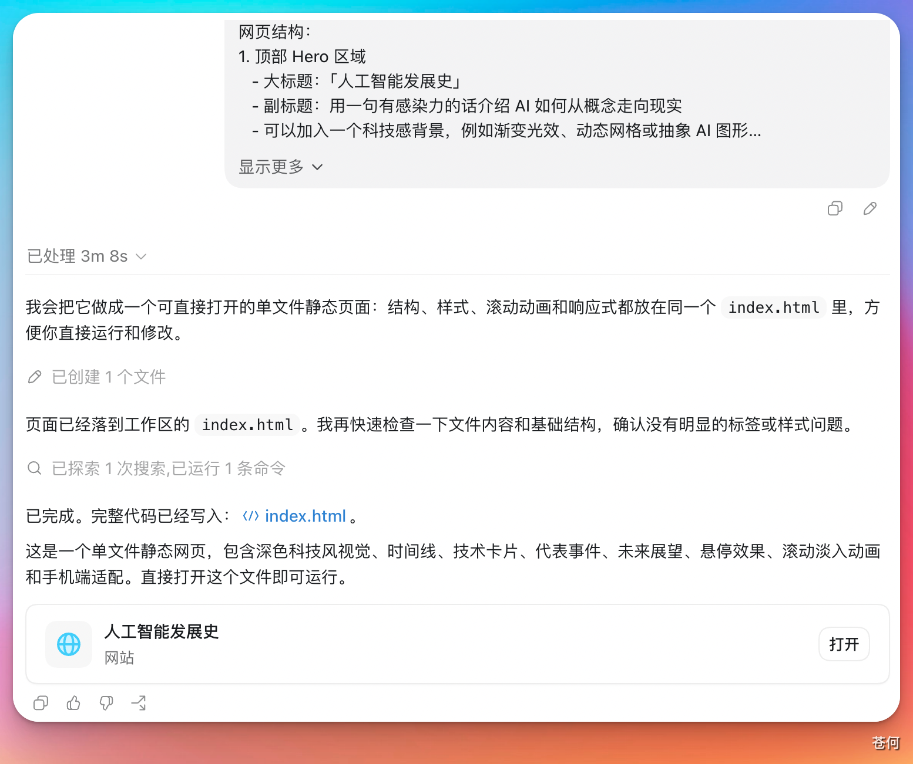
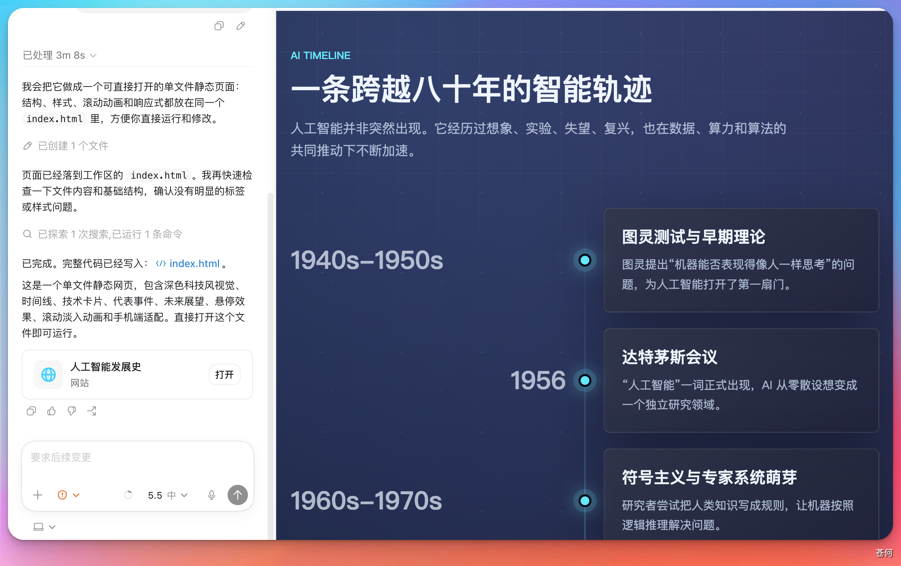
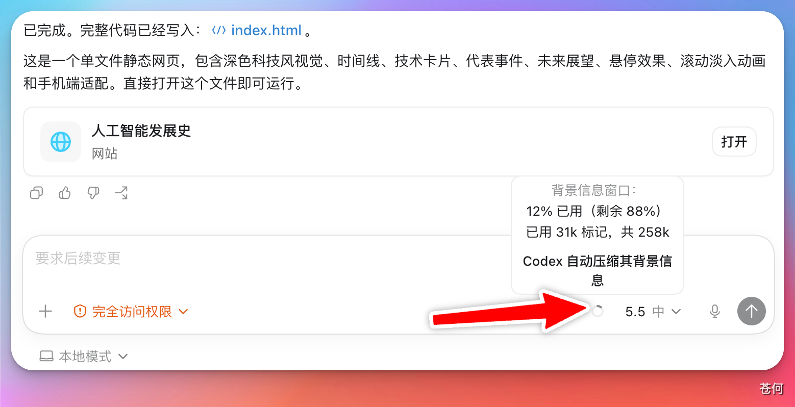
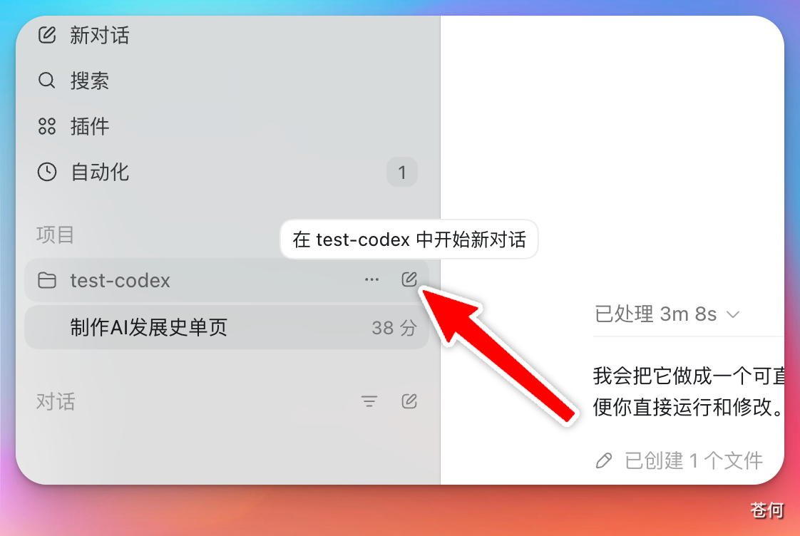

06 入门准备
用 Codex 完成第一个任务
本章以"用 Codex 桌面 App 开发一个关于 AI 发展历史的简单网页"为例，走完一次完整的任务闭环，帮助你快速上手 Codex 桌面 App 的基本用法。
来源：CodexGuide 原文。原页面标注 MIT Licensed；原图与说明按页面内容保留。
用 Codex 完成第一个任务
💡 最后核对 官方资料最后核对日期：2026-05-27。本章以开发一个简单网页为例，演示从创建工作目录到任务迭代的完整操作流程。
本章以"用 Codex 桌面 App 开发一个关于 AI 发展历史的简单网页"为例，走完一次完整的任务闭环，帮助你快速上手 Codex 桌面 App 的基本用法。
第一步：创建本地工作文件夹
在本地新建一个空文件夹，作为 Codex 的工作目录。Codex 生成的所有文件都会保存在这里。
❗ 注意 文件夹路径中尽量不要包含中文，避免部分工具出现兼容性问题。

第二步：选择对话还是项目
打开 Codex 桌面 App 后，你需要选择用"对话"还是"项目"来开始任务。
- 对话：适合一次性任务，操作简单，但多个对话之间不共享工作目录。
- 项目：支持在同一工作目录下创建多个对话，每个对话处理不同的子任务，管理更方便。
如果你不确定选哪个，优先选择项目——后续扩展任务时更灵活，工作目录也只需要配置一次。
第三步：添加工作目录
选择项目后，点击"使用现有文件夹"，选中刚才创建的文件夹。

选择完成后，对话框左下角会显示当前工作目录的路径，确认路径正确即可。

第四步：输入任务描述，开始执行
在对话框中输入你的需求，点击发送，Codex 就会开始执行任务。

任务完成后，Codex 会在对话中展示结果，同时将生成的文件写入工作目录。

如果生成的是网页文件，可以直接点击 Codex 弹出的"打开"按钮，在 App 内置浏览器中预览效果，无需手动打开文件夹。

第五步：逐步迭代
对结果不满意时，直接在当前对话框中继续描述修改需求，Codex 会在已有基础上进行调整。
随着对话轮次增加，上下文窗口会逐渐被填满。点击对话框右下角的小圆圈图标，可以查看当前上下文使用情况。

💡 什么是上下文窗口？ 每次对话都有容量上限，每一轮问答都会占用一定空间。当上下文接近满载时，建议在项目中新建一个对话继续处理后续任务——新对话仍然共享同一工作目录，不需要重新配置。

如果使用的是"对话"模式而非项目，新建对话时需要重新指定工作目录，两个对话之间也是相互隔离的，不方便统一管理。这也是推荐使用项目的主要原因之一。